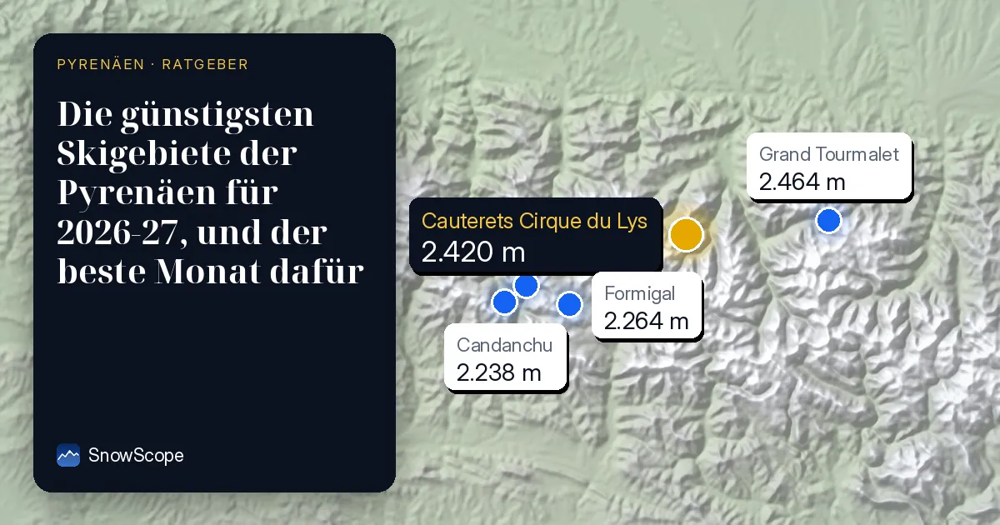

Die günstigsten Skigebiete der Pyrenäen für 2026-27, und der beste Monat dafür
Die Pyrenäen sind die günstigsten großen Berge zum Skifahren in Westeuropa: Cauterets verkauft einen Erwachsenen-Tagespass für 46 EUR, Boí Taüll für 49 EUR. Aber der Zeitpunkt spielt hier eine größere Rolle als in den Alpen. In unserer Schneehistorie von 46 vergangenen Wintern hat keines der sechs verglichenen Skigebiete auch nur eine einzige Woche mit 50 cm Schnee in 9 von 10 Wintern, und der Dezember fällt meist dünn aus.
Die Live-Schneeprognose für Cauterets Cirque du Lys in der SnowScope-AppSchneehöhen, Pulverschnee-Alarme und 3D-Karte, gratis.
Sechs Pyrenäen-Skigebiete im Preisvergleich
Cauterets ist mit 46 EUR pro Tag zum öffentlichen Tarif am günstigsten, und 276 EUR für 6 Tage. Boí Taüll in Katalonien kostet 49 EUR. Der gemeinsame Pass von Astún-Candanchú kostet 54,5 EUR online und 59,5 EUR an der Kasse, und der Grand Tourmalet, das größte französische Gebiet der Pyrenäen, 55 EUR pro Tag oder 294 EUR für 6 Tage.
Die Preise von Grandvalira in Andorra ändern sich je nach Datum: 62,5 EUR online und 72 EUR an der Kasse für Montag, den 14. Dezember 2026. Baqueira Beret ist das teuerste der sechs Skigebiete, 70 EUR pro Tag mit der aufladbaren Karte und 74 EUR mit einem normalen Ticket, oder 359 EUR für 6 Tage.
Warum der Dezember hier ein Glücksspiel ist
Die Pyrenäen sind niedriger als die Alpen und liegen näher am Atlantik und am Mittelmeer, deshalb bringen Stürme am Anfang des Winters im Tal oft Regen statt Schnee. Auf mittlerer Höhe liegen in einem üblichen Dezember 34 cm in Cauterets, 28 cm in Astún, 26 cm am Grand Tourmalet und in Grandvalira, 25 cm in Boí Taüll und 20 cm in Baqueira Beret.
Der Januar verändert das Bild. Auf denselben Höhen liegen üblicherweise 72 cm in Cauterets, 66 cm in Astún, 60 cm in Boí Taüll, 57 cm am Grand Tourmalet, 54 cm in Grandvalira und 44 cm in Baqueira. Cauterets hat außerdem die meisten Wochen mit 50 cm in mindestens der Hälfte der Winter: 15, vor Astún mit 14.
Unsere Tipps für einen günstigen Pyrenäen-Trip
Cauterets bietet in beiderlei Hinsicht das beste Preis-Leistungs-Verhältnis: den niedrigsten Preis und die tiefste übliche Schneelage der sechs Gebiete. Das Gebiet Cirque du Lys ist klein, 25 km ausgeschilderte Pisten, liegt aber in einem Kessel, der den Schnee hält. Astún-Candanchú ist die spanische Antwort, zwei Gebiete auf einem Pass oberhalb von Canfranc, mit Liften ab 1.659 m.
Boí Taüll hat die höchstgelegenen Lifte der Liste, von 2.039 m bis 2.747 m, was an milden Tagen hilft. Wer ein großes Skigebiet sucht, findet in Grandvalira 136 km ausgeschilderte Pisten; buche online und wähle Wochentage außerhalb der Ferien, um den günstigeren Preis zu bekommen.
Wann du buchen solltest
Für eine günstige Woche mit guter Schneelage solltest du Mitte Januar bis Anfang März ansteuern, außerhalb der französischen und spanischen Schulferien. Die zweite Januarhälfte ist meist die beste Kombination: genug Schnee, ruhige Pisten und normale Preise. Wenn du nur im Dezember Zeit hast, warte auf einen richtigen Schneefall, bevor du buchst, und halte den Trip kurz.
Die meisten dieser Preise gelten für den ganzen Winter 2026-27, aber Grandvalira und andere dynamische Preise steigen, je näher das Datum rückt. Früh online zu buchen ist der einfachste Weg zu sparen.
Günstig übernachten in den Pyrenäen
Taldörfer sind der Spar-Trick: das Dorf Cauterets selbst, Canfranc für Astún-Candanchú, die Dörfer des Vall de Boí, oder Soldeu und die andorranischen Täler für Grandvalira. Die Karte in diesem Artikel zeigt Übernachtungen unter 110 EUR pro Nacht für die Woche vom 16. bis 23. Januar 2027 in der Nähe unserer vier Favoriten.
Prüfe vor dem Fahren außerhalb der markierten Pisten immer den Lawinenbericht, und denke daran, dass Bergstraßen in den Pyrenäen nach einem Sturm Schneeketten erfordern können.
Tipps für Skifahrer
- Am günstigsten und schneesichersten: Cauterets, 46 EUR pro Tag und 72 cm in einem üblichen Januar auf mittlerer Höhe.
- Bester Monat: die zweite Januarhälfte, außerhalb der Schulferien.
- Dezember in den Pyrenäen: erst nach einem richtigen Schneefall buchen.
- Grandvalira und andere dynamische Preise: online, früh und an Wochentagen buchen.
Weitere Karten (externe Seiten)
Quellen und Nachweise
- N'PY, Cauterets official ski pass prices 2026-27 www.n-py.com/fr/cauterets/forfaits-ski
- Boí Taüll, official lift pass prices (tarifes) pirineu365.cat/boitaull/estacio/tarifes/
- Astún, official lift pass prices (tarifas 26-27) astun.com/forfaits/
- N'PY, Grand Tourmalet official ski pass prices 2026-27 www.n-py.com/fr/grand-tourmalet/forfaits-ski
- Grandvalira, official ski pass booking (online price for 14 December 2026, read 2026-11-13) www.grandvalira.com/en/ski-pass/day
- Baqueira Beret, official prices (tarifas), season 26-27 www.baqueira.es/es/tarifas
Zu diesen Zahlen
Schneewerte: SnowScope-Schneehistorie, 46 vergangene Winter (1980-81 bis 2025-26) auf drei Höhen des Skigebiets (eine Schätzung für eine Fläche, keine Meldungen des Skigebiets). Lifte, Pisten und Anreise: die Quellen unten, geprüft am angegebenen Datum.
Diesen Bericht zitieren
Für Forschung, Lehre oder Presse: Zahlen und Grafiken sind unter CC BY 4.0 mit dieser Quellenangabe frei nutzbar.
SnowScope (2026), Die günstigsten Skigebiete der Pyrenäen für 2026-27, und der beste Monat dafür, https://snowscope.app/blog/de/2026/11/cheapest-ski-resorts-pyrenees-2026-27-prices-snow.html, abgerufen am 2026-11-19
SnowScope (Atlas Labs). (2026, November 19). Die günstigsten Skigebiete der Pyrenäen für 2026-27, und der beste Monat dafür. SnowScope snow reports. https://snowscope.app/blog/de/2026/11/cheapest-ski-resorts-pyrenees-2026-27-prices-snow.html
BibTeX
@misc{snowscope2026cheapestskiresortspyrene,
author = {{SnowScope (Atlas Labs)}},
title = {Die günstigsten Skigebiete der Pyrenäen für 2026-27, und der beste Monat dafür},
year = {2026},
month = nov,
howpublished = {\url{https://snowscope.app/blog/de/2026/11/cheapest-ski-resorts-pyrenees-2026-27-prices-snow.html}},
note = {Published 2026-11-19 14:57 UTC; accessed 2026-11-19}
}· CC BY 4.0 · Methoden, Daten und Werkzeuge →
Cauterets Cirque du Lys: Schnee und Temperatur nach Höhe, dieser Winter vs letzter (Werkzeuge) →
Cauterets Cirque du Lys folgen
Gratis: eine Nachricht, wenn Neuschnee kommt, und jeden Morgen die Vorhersage.